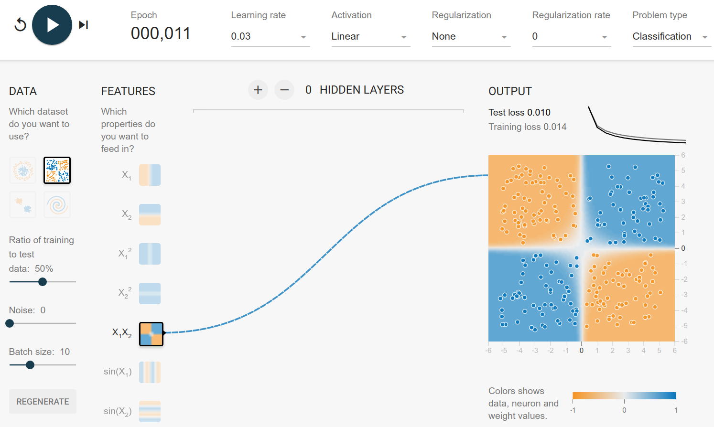
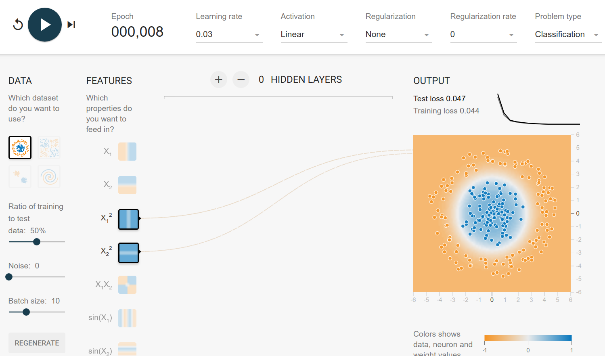
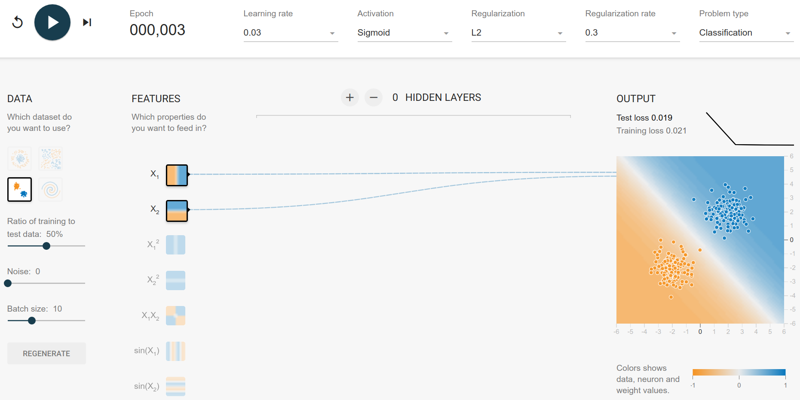
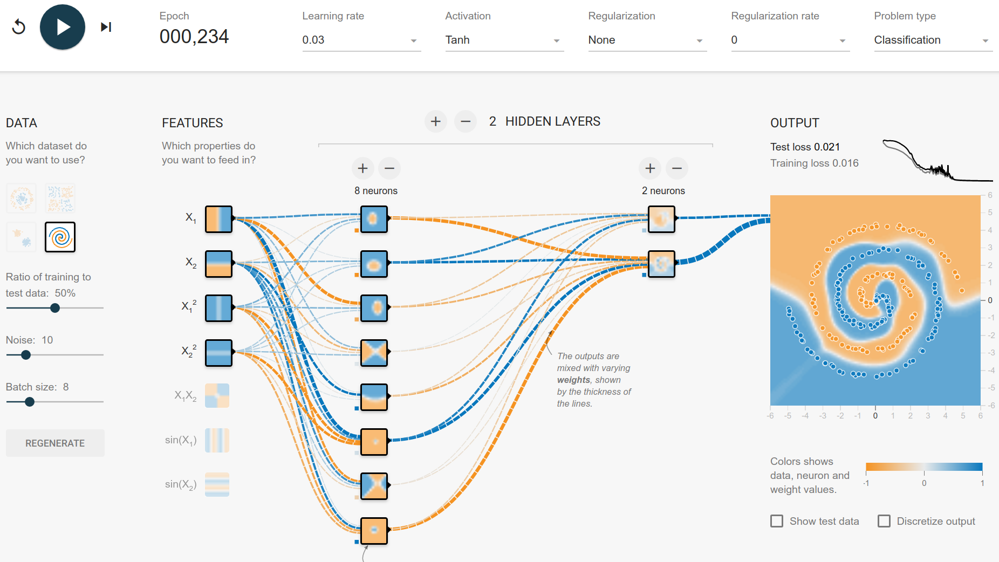

When you develop a model, you want the optimal model. The perfect one.
The first problem with that desire is conflicting goals:

Typical goals when designing a model are:
- Quality: Have a high accuracy, low error, high \(F_\beta\) score, ...
- Production
- Inference speed: The faster it is in production, the better
- Inference memory consumption: Super important if it should run on small machines
- Training:
- Training speed: The more epochs you can train in 1h, the better
- Convergence speed: The fewer epochs you need until convergence, the better
- Training memory consumption: You might have a small GPU for training
- Stability: If you train with 10 different initializations, you want to get 10 similar results
Sometimes, however, you can build perfect models. It is basically when you know how the data generating process works.
TensorFlow Playground
Let's get some perfect solutions for the TensorFlow Playground.
All of the datasets have points \((x_1, x_2)\) which are assigned to either the blue class or to the orange class.
The only input features you can choose are:
- \(x_1, x_2\): Linear
- \(x_1^2, x_2^2\): Quadratic
- \(x_1 \cdot x_2\): Multiplication
- \(\sin(x_1), \sin(x_2)\)
Exclusive Or
You can generate this dataset by drawing \((x_1, x_2)\) from \([-1, 1] \times [-1, 1]\) and assigning the classes by
It happens that you get this property when you multiply the two values:
Hence, with multiplication you can get the function directly:
{kind=link}

Circle Dataset
The circle dataset can be generated by drawing \(r \in [0, 6]\) and \(\theta \in [0, 2\pi)\). The rule to assign the class is then
and then
Here the solution is pretty obvious: It's a linear model of the squared inputs:
{kind=link}

Gaussian
The Gaussian dataset seems to have the blue center in \((2, 2)\) and the orange center in \((-2, -2)\). This is a bit more difficult to generate, but you can see that the optimal decision boundary is \(x_2 = -x_1\). Everything below is more likely to be orange, everything above is more likely to be blue.
and hence the model:
{kind=link}

Spirals
Generating the spirals is a bit more complicated. I've added a gist which generates a dataset which is super similar.
Basically, it is choosing \(r \in \mathbb{R}_{\geq 0}\). The \(\alpha \in [0, 360)\) defines the class, e.g. \(\alpha_\text{orange}=180\) and \(\alpha_\text{blue}=90\):
Hence finding the class is related to finding the \(\alpha\):
But neither \(\cos^{-1}\) nor \(\sin^{-1}\) are available as input features. And, more relevant, we don't have \(r\). \(r\) is basically the distance from \((0, 0)\). So \(r = \sqrt{x_1^2 + x_2^2}\). Hence, we need \(x_1^2\) and \(x_2^2\) as features.
This is where I'm stuck. My intuition tells me that tanh is a nice activation function for this problem, because it is one of the geometric functions. Let's see how far we get with that:
{kind=link}

So with 2 hidden layers, it can be done in about 250 epochs. No regularization, only squared and linear features. But looking at the features of the first hidden layer, we can see that it mostly builds circle-like features. The spiral has only 3 rotations, so it is rather easy to fit it. My guess is that the number of rotations directly influences the number of neurons you need in the first hidden layer.
The training with a batch size of 8 often has a phase of big instability (high jumps in the loss curve). Increasing the batch size leads to a smoother loss curve.
Typically, after around 1000 epochs the training is done and the result looks fine.
How Regularization can destroy your model
Look at this network. If you add any regularization with a rate of 0.003 or more, it is not able to learn anymore.